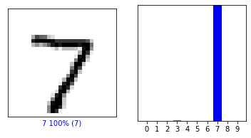
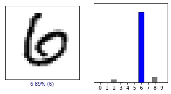
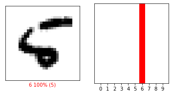

\(\newcommand{\bfg}{\mathbf{g}}\) \(\newcommand{\bfh}{\mathbf{h}}\) \(\newcommand{\bgamma}{\boldsymbol{\gamma}}\) \(\newcommand{\bsigma}{\boldsymbol{\sigma}}\)
6.5. Backpropagation and neural networks#
We develop the basic mathematical foundations of automatic differentiation. We restrict ourselves to a special setting: multi-layer progressive functions. Many important classifiers take the form of a sequence of compositions where parameters are specific to each layer of composition. We show how to systematically apply the Chain Rule to such functions. We give examples in the next section.
6.5.1. Progressive functions#
We start with two important remarks:
A classifier \(h\) takes an input in \(\mathbb{R}^d\) and predicts one of \(K\) possible labels. It will be convenient for reasons that will become clear below to use one-hot encoding of the labels. That is, we encode label \(i\) as the \(K\)-dimensional vector \(\mathbf{e}_i\). Here, as usual, \(\mathbf{e}_i\) the canonical basis of \(\mathbb{R}^K\), i.e., the vector with a \(1\) in entry \(i\) and a \(0\) elsewhere. Furthermore, we allow the output of the classifier to be a probability distribution over the labels \(\{1,\ldots,K\}\), that is, a vector in
One source of confusion here is that, while it is natural to define a classifier \(h\) as a function of the input data \(\mathbf{x}\in \mathbb{R}^{d}\), when fitting the data we are ultimately interested in thinking of \(h\) as a function of the parameters \(\mathbf{w} \in \mathbb{R}^r\) that need to be adjusted - over a fixed dataset. Hence in this section, we emphasize thoughout in the notation that \(\mathbf{x}\) is fixed while \(\mathbf{w}\) is variable.
The general model is defined as follows. Throughout this section, we use the following notation: for two vectors \(\mathbf{v}_1 \in \mathbb{R}^{a_1}\) and \(\mathbf{v}_2 \in \mathbb{R}^{a_2}\), the concatenation of \(\mathbf{v}_1\) and \(\mathbf{v}_2\) as a vector in \(\mathbb{R}^{a_1 + a_2}\) is denoted by
For example, if \(\mathbf{v}_1 = (1, 2)\) and \(\mathbf{v}_2 = (-1, -3, -5)\), then \((\mathbf{v}_1,\mathbf{v}_2) = (1, 2, -1, -3, -5)\). More generally, \((\mathbf{v}_1,\ldots,\mathbf{v}_i)\) is the concatenation of vectors \(\mathbf{v}_1,\ldots,\mathbf{v}_i\).
We have \(L\) layers. Layer \(i\) is defined by a continuously differentiable function \(g_i\) which takes two vector-valued inputs: a vector of inputs \(\mathbf{z}_i \in \mathbb{R}^{n_i}\) which is fed from the \((i-1)\)-st layer and a vector of parameters \(\mathbf{w}_i \in \mathbb{R}^{r_i}\) specific to the \(i\)-th layer
The output of \(\bfg_i\) is a vector in \(\mathbb{R}^{n_{i+1}}\) which is passed to the \((i+1)\)-st layer as input.
We denote by \(\mathbf{z}_1 = \mathbf{x} \in \mathbb{R}^{d}\) the input to the first layer. For \(i =1,\ldots,L\), let
be the concatenation of the parameters from the first \(i\) layers as a vector in \(\mathbb{R}^{r_1+\cdots+r_i}\). Then the output of layer \(i\), as a function of the parameters, is the composition
where the input to layer \(i\) (both layer-specific parameters and the output of the previous layer), again as a function of the parameters, is
for \(i \geq 2\). When \(i=1\), we have simply \(\mathcal{I}_{1,\mathbf{x}}(\overline{\mathbf{w}}^{1}) = \left(\mathbf{z}_1, \mathbf{w}_1 \right) = \left(\mathbf{x}, \mathbf{w}_1 \right)\).
Letting \(\mathbf{w} := \overline{\mathbf{w}}^{L}\), the final output is
Expanding out the composition, this can be written alternatively as
As a final step, we have a loss function \(\ell_{\mathbf{y}} : \mathbb{R}^{n_{L+1}} \to \mathbb{R}\) which takes as input the output of the last layer and measures the fit to the given label \(\mathbf{y} \in \Delta_K\). We will see some example below. The final function is then
We seek to compute the gradient of \(f_{\mathbf{x},\mathbf{y}}(\mathbf{w})\) with respect to the parameters \(\mathbf{w}\) in order to apply a gradient descent method.
6.5.2. Applying the chain rule#
Recall that the key insight from the Chain Rule is that to compute the gradient of a composition such as \(h_{\mathbf{x}}(\mathbf{w})\) - no matter how complex - it suffices to separately compute the Jacobians of the intervening functions and then take matrix products. In this section, we compute the necessary Jacobians in the progressive case. To simplify the notation, we drop the \(\mathbf{x}\) from \(\mathcal{O}_{i,\mathbf{x}}\) and \(\mathcal{I}_{i,\mathbf{x}}\).
The basic composition step is
Applying the Chain Rule we get
First, the Jacobian of
has a simple block structure
since its first component, \(\mathcal{O}_{i-1}(\overline{\mathbf{w}}^{i-1})\), does not depend on \(\mathbf{w}_i\). That last formula is for \(i \geq 2\). When \(i=1\) we have \(\mathcal{I}_{1}(\overline{\mathbf{w}}^{1}) = \left(\mathbf{x}, \mathbf{w}_1\right)\), so that
We partition the Jacobian of \(\bfg_i(\mathbf{z}_i, \mathbf{w}_i)\) likewise, that is, we divide it into those columns corresponding to partial derivatives with respect to \(\mathbf{z}_{i}\) (denoted \(A_i\)) and with respect to \(\mathbf{w}_i\) (denoted \(B_i\))
evaluated at \((\mathbf{z}_i, \mathbf{w}_i) = \mathcal{I}_{i}(\overline{\mathbf{w}}^{i}) = (\mathcal{O}_{i-1}(\overline{\mathbf{w}}^{i-1}), \mathbf{w}_i)\).
Plugging back above we get
This leads to the fundamental recursion
from which the Jacobian of \(h_{\mathbf{x}}(\mathbf{w})\) can be computed.
The base case \(i=1\) is
Finally, using the Chain Rule again
6.5.3. Forward and backward propagation#
We take advantage of the recursion above to compute the gradient of \(h_{\mathbf{x}}\). There are two ways of doing this. Applying the recursion directly is one of them, but it requires many matrix-matrix products. The first few steps are
and so on.
Instead, one can also run the recursion backwards. The latter approach can be much faster because, as we detail next, it involves only matrix-vector products. Start from the end, that is, with the equation
Note that \(\nabla {\ell_{\mathbf{y}}}(\bfh_\mathbf{x}(\mathbf{w}))\) is a vector - not a matrix. Then expand the matrix \(J_{\bfh_\mathbf{x}}(\mathbf{w})\) using the recursion above
The key is that both expressions \(A_L^T \,\nabla {\ell_{\mathbf{y}}}(\bfh_\mathbf{x}(\mathbf{w}))\) and \(B_L^T \,\nabla {\ell_{\mathbf{y}}}(\bfh_\mathbf{x}(\mathbf{w}))\) are matrix-vector products. That pattern persists at the next levels of recursion.
At the next level, we expand the matrix \(J_{\mathcal{O}_{L-1}}(\overline{\mathbf{w}}^{L-1})^T\) using the recursion above
Continuing by induction gives an alternative formula for the gradient of \(f_{\mathbf{x},\mathbf{y}}\).
Indeed, the next level gives
and so on.
There is one more detail to note. The matrices \(A_i, B_i\) depend on the output of layer \(i-1\). To compute them, we proceeed forward, that is, we let \(\mathbf{z}_1 = \mathbf{x}\) then
and so on.
We give the full algorithm now - in two passes. In the forward pass, or forward propagation step, we compute the following:
Initialization:
Forward layer loop: For \(i = 1,\ldots,L\):
Loss:
In the backward pass, or backpropagation step, we compute the following:
Backward layer loop: For \(i = L,\ldots,1\):
Output:
Note that we do not in fact need to compute \(A_1\) and \(\mathbf{p}_1\).
6.5.4. A simple example: linear regression#
We will give several concrete examples of progressive functions and of the application of the algorithmic differentiation method in this section and the next ones. We begin with a straighforward example: linear regression.
Computing the gradient While we have motivated the framework introduced in the previous section from the point of view of classification, it also immediately applies to the regression setting. Both classification and regression are instances of supervised learning.
We first compute the gradient of a single sample. Here \(\mathbf{x} \in \mathbb{R}^d\) again, but \(y\) is a real-valued outcome variable. We revisit the case of linear regression where the loss function is
and the regression function has a single layer (that is, \(L=1\)) with
where \(\mathbf{w} \in \mathbb{R}^{d}\) are the parameters. Recall that we can include a constant term (one that does not depend on the input) by adding a \(1\) to the input. To keep the notation simple, we assume that this pre-processing has already been performed if desired. Finally, the objective function for a single sample is
Using the notation from the previous subsection, the forward pass in this case is:
Initialization:
Forward layer loop:
where \(\mathbf{w}_1 := \mathbf{w}\).
Loss:
The backward pass is:
Backward layer loop:
Output:
Note that there is in fact no need to compute \(A_1\) and \(\mathbf{p}_1\).
To get the full gradient, we now consider \(n\) samples \((\mathbf{x}_i,y_i)\), \(i=1,\ldots,n\). The loss function can be taken as the average of the individual sample contributions, so the gradient is obtained by linearity
where each term can be computed separately by the procedure above.
We can then apply gradient decent. We start from an arbitrary \(\mathbf{w}^{0}\) and update as follows
In stochastic gradient descent (SGD), a variant of gradient descent, we pick a sample \(I_t\) uniformly at random in \(\{1,\ldots,n\}\) and update as follows
More generally, in the so-called mini-batch version of SGD, we pick instead a random sub-sample \(\mathcal{B}_t \subseteq \{1,\ldots,n\}\) of size \(B\)
The key observation about the two stochastic updates above is that, in expectation, they perform a step of gradient descent. That turns out to be enough and it has computational advantages.
The Advertising dataset and the least-squares solution We return to the Advertising dataset.
df = pd.read_csv('advertising.csv')
df.head()
| Unnamed: 0 | TV | radio | newspaper | sales | |
|---|---|---|---|---|---|
| 0 | 1 | 230.1 | 37.8 | 69.2 | 22.1 |
| 1 | 2 | 44.5 | 39.3 | 45.1 | 10.4 |
| 2 | 3 | 17.2 | 45.9 | 69.3 | 9.3 |
| 3 | 4 | 151.5 | 41.3 | 58.5 | 18.5 |
| 4 | 5 | 180.8 | 10.8 | 58.4 | 12.9 |
n = len(df.index)
print(n)
200
We first compute the solution using the least-squares approach we detailed previously. We use numpy.column_stack to add a column of ones to the feature vectors.
TV = df['TV'].to_numpy()
radio = df['radio'].to_numpy()
newspaper = df['newspaper'].to_numpy()
sales = df['sales'].to_numpy()
features = np.stack((TV, radio, newspaper), axis=-1)
A = np.column_stack((np.ones(n), features))
coeff = mmids.ls_by_qr(A, sales)
print(coeff)
[ 2.93888937e+00 4.57646455e-02 1.88530017e-01 -1.03749304e-03]
The MSE is:
np.mean((A @ coeff - sales)**2)
2.784126314510936
Solving the problem using PyTorch We will be using PyTorch to implement the previous method. We first convert the data into PyTorch tensors. We then use torch.utils.data.TensorDataset to create the dataset. Finally, torch.utils.data.DataLoader provides the utilities to load the data in batches for training. We take mini-batches of size BATCH_SIZE = 64 and we apply a random permutation of the samples on every pass (with the option shuffle=True).
# Convert data to PyTorch tensors
features_tensor = torch.tensor(features,
dtype=torch.float32)
sales_tensor = torch.tensor(sales,
dtype=torch.float32).view(-1, 1)
# Create a dataset and dataloader for training
BATCH_SIZE = 64
train_dataset = TensorDataset(features_tensor, sales_tensor)
train_loader = DataLoader(train_dataset, batch_size=BATCH_SIZE, shuffle=True)
Now we construct our model. It is simply an affine map from \(\mathbb{R}^3\) to \(\mathbb{R}\). Note that there is no need to pre-process the inputs by adding \(1\)s. A constant term (or “bias variable”) is automatically added by PyTorch (unless one chooses the option bias=False).
# Define the model using nn.Sequential
model = nn.Sequential(
nn.Linear(3, 1) # 3 input features, 1 output value
)
Finally, we are ready to run an optimization method of our choice on the loss function, which are specified next. There are many optimizers available. (See this post for a brief explanation of many common optimizers.) Here we use SGD as the optimizer. And the loss function is the MSE. A quick tutorial is here.
Choosing the right number of passes (i.e. epochs) through the data requires some experimenting. Here \(10^4\) suffices. But in the interest of time, we will run it only for \(100\) epochs. As you will see from the results, this is not quite enough. On each pass, we compute the output of the current model, use backward() to obtain the gradient, and then perform a descent update with step(). We also have to reset the gradients first (otherwise they add up by default).
# Compile the model: define loss function and optimizer
criterion = nn.MSELoss()
optimizer = optim.SGD(model.parameters(), lr=1e-5)
# Train the model
epochs = 100
for epoch in range(epochs):
for inputs, targets in train_loader:
optimizer.zero_grad()
outputs = model(inputs)
loss = criterion(outputs, targets)
loss.backward()
optimizer.step()
if (epoch+1) % 10 == 0:
print(f"Epoch {epoch+1}/{epochs}, Loss: {loss.item()}")
The final parameters and loss are:
Show code cell source
# Get and print the model weights and bias
weights = model[0].weight.detach().numpy()
bias = model[0].bias.detach().numpy()
print("Weights:", weights)
print("Bias:", bias)
Weights: [[0.06241158 0.11733232 0.07956962]]
Bias: [-0.45946854]
Show code cell source
# Evaluate the model
model.eval()
with torch.no_grad():
total_loss = 0
for inputs, targets in train_loader:
outputs = model(inputs)
loss = criterion(outputs, targets)
total_loss += loss.item()
print(f"Mean Squared Error on Training Set: {total_loss / len(train_loader)}")
Mean Squared Error on Training Set: 7.089584469795227
6.5.5. A detailed example: multinomial logistic regression#
We give a second concrete example of progressive functions and of the application of the algorithmic differentiation method.
Kronecker product It will be convenient to introduce one more piece of matrix notation, the Kronecker product.
Let \(A = (a_{i,j})_{i \in [n], j \in [m]} \in \mathbb{R}^{n \times m}\) and \(B = (b_{i,j})_{i \in [p], j \in [q]} \in \mathbb{R}^{p \times q}\) be arbitrary matrices. Their Kronecker product, denoted \(A \otimes B\), is the following matrix in block form
EXAMPLE: (Illustration) Here is a simple illustrative example from Wikipedia:
\(\lhd\)
EXAMPLE: (Outer product) Here is another example we have encoutered previously, the outer product of two vectors \(\mathbf{u} = (u_1,\ldots,u_n) \in \mathbb{R}^n\) and \(\mathbf{v} = (v_1,\ldots, v_m) \in \mathbb{R}^m\). Recall that the outer product is defined in block form as the \(n \times m\) matrix
Equivalently,
\(\lhd\)
EXAMPLE: (Illustration, continued) In the previous example the Kronecker product turned out to be commutative (i.e., we had \(\mathbf{v}^T \otimes \mathbf{u} = \mathbf{u} \otimes \mathbf{v}^T\)). This is not the case in general. Going back to the illustrative example above, note that
You can check that this is different from what we obtained in the opposite order. \(\lhd\)
The Kronecker product has many useful properties. First, we introduce another piece of matrix notation, the Hadamard product. The Hadamard product of two matrices (or vectors) of the same dimension, \(A = (a_{i,j})_{i \in [n], j \in [m]}, B = (b_{i,j})_{i\in [n], j \in [m]} \in \mathbb{R}^{n \times m}\), is defined as the element-wise product
EXAMPLE: (Illustration, continued) Continuing our previous illustrative example
\(\lhd\)
LEMMA (Kronecker Product Properties) The Kronecker product has the following properties:
(a) If \(B, C\) are matrices of the same dimension
(b) If \(A, B, C, D\) are matrices of such size that one can form the matrix products \(AC\) and \(BD\), then
© If \(A, C\) are matrices of the same dimension and \(B, D\) are matrices of the same dimension, then
(d) If \(A,B\) are invertible, then
(e) The transpose of \(A \otimes B\) is
(f) If \(\mathbf{u}\) is a column vector and \(A, B\) are matrices of such size that one can form the matrix product \(AB\), then
Similarly,
\(\flat\)
Background on multinomial logistic regression We return to classification. We first turn to multinomial logistic regression to learn a classifier over \(K\) labels. Recall that we encode label \(i\) as the \(K\)-dimensional vector \(\mathbf{e}_i\) and that we allow the output of the classifier to be a probability distribution over the labels \(\{1,\ldots,K\}\). Observe that \(\mathbf{e}_i\) can itself be thought of as a probability distribution, one that assigns probability one to \(i\).
In multinomial logistic regression, we once again use an affine function of the input data.
This time, we have \(K\) functions that output a score associated to each label. We then transform these scores into a probability distribution over the \(K\) labels. There are many ways of doing this. A standard approach is the softmax function \(\bgamma = (\gamma_1,\ldots,\gamma_K)\): for \(\mathbf{z} \in \mathbb{R}^K\)
To explain the name, observe that the larger inputs are mapped to larger probabilities.
In fact, since a probability distribution must sum to \(1\), it is determined by the probabilities assigned to the first \(K-1\) labels. In other words, we could drop the score associated to the last label. But the keep the notation simple, we will not do this here.
For each \(k\), we have a regression function
where \(\mathbf{w} = (\mathbf{w}^{(1)},\ldots,\mathbf{w}^{(K)})\) are the parameters with \(\mathbf{w}^{(k)} \in \mathbb{R}^{d}\) and \(\mathbf{x} \in \mathbb{R}^d\) is the input. A constant term can be included by adding a \(1\) to \(\mathbf{x}\). As we did in the linear regression case, we assume that this pre-processing has been performed previously. To simplify the notation, we let \(\mathcal{W} \in \mathbb{R}^{K \times d}\) as the matrix with rows \((\mathbf{w}^{(1)})^T,\ldots,(\mathbf{w}^{(K)})^T\).
The output of the classifier is
for \(i=1,\ldots,K\), where \(\bgamma\) is the softmax function. Note that the latter has no associated parameter.
It remains to define a loss function. To quantify the fit, it is natural to use a notion of distance between probability measures, here between the output \(h_{\mathbf{x}}(\mathbf{w}) \in \Delta_K\) and the correct label \(\mathbf{y} \in \{\mathbf{e}_1,\ldots,\mathbf{e}_{K}\} \subseteq \Delta_K\). There are many such measures. In multinomial logistic regression, we use the Kullback-Leibler divergence. For two probability distributions \(\mathbf{p}, \mathbf{q} \in \Delta_K\), it is defined as
where it will suffice to restrict ourselves to the case \(\mathbf{q} > \mathbf{0}\) and where we use the convention \(0 \log 0 = 0\) (so that terms with \(p_i = 0\) contribute \(0\) to the sum).
Notice that \(\mathbf{p} = \mathbf{q}\) implies \(\mathrm{KL}(\mathbf{p} \| \mathbf{q}) = 0\). We show that \(\mathrm{KL}(\mathbf{p} \| \mathbf{q}) \geq 0\), a result known as Gibbs’ inequality.
THEOREM (Gibbs) For any \(\mathbf{p}, \mathbf{q} \in \Delta_K\) with \(\mathbf{q} > \mathbf{0}\),
\(\sharp\)
Proof: Let \(I\) be the set of indices \(i\) such that \(p_i > 0\). Hence
It can be proved that \(\log x \leq x - 1\) for all \(x > 0\) (Try it!). So
where we used that \(\log z^{-1} = - \log z\) on the first line and the fact that \(p_i = 0\) for all \(i \notin I\) on the fourth line. \(\square\)
Going back to the loss function, we use the identity \(\log\frac{\alpha}{\beta} = \log \alpha - \log \beta\) to re-write
where \(\bfh_{\mathbf{x}} = (h_{\mathbf{x},1},\ldots,h_{\mathbf{x},K})\). Notice that the first term on right-hand side does not depend on \(\mathbf{w}\). Hence we can ignore it when optimizing \(\mathrm{KL}(\mathbf{y} \| \bfh_{\mathbf{x}}(\mathbf{w}))\). The remaining term is
We use it to define our loss function. That is, we set
Finally,
Computing the gradient We apply the forward and backpropagation steps from the previous section. We then use the resulting recursions to derive an analytical formula for the gradient.
Forward and backward propagation: The forward pass starts with the initialization \(\mathbf{z}_1 := \mathbf{x}\). The forward layer loop has two steps. Set \(\mathbf{w}_1 = (\mathbf{w}_1^{(1)},\ldots,\mathbf{w}_1^{(K)})\) equal to \(\mathbf{w} = (\mathbf{w}^{(1)},\ldots,\mathbf{w}^{(K)})\). First we compute
where we define \(\mathcal{W}_1 \in \mathbb{R}^{K \times d}\) as the matrix with rows \((\mathbf{w}_1^{(1)})^T,\ldots,(\mathbf{w}_1^{(K-1)})^T\).
To compute the Jacobian, let us look at the columns corresponding to the variables in \(\mathbf{w}_1^{(k)}\), that is, columns \(\alpha_k = d + (k-1) d + 1\) to \(\beta_k = d + k d\). Note that only component \(k\) of \(g_1\) depends on \(\mathbf{w}_1^{(k)}\), so the rows \(\neq k\) of \(J_{\bfg_1}\) are \(0\) for those columns. Row \(k\) on the other hand is \(\mathbf{z}_1^T\). Hence one way to write the columns \(\alpha_k\) to \(\beta_k\) of \(J_{\bfg_1}\) is \(\mathbf{e}_k \mathbf{z}_1^T\), where here \(\mathbf{e}_k \in \mathbb{R}^{K}\) is the canonical basis of \(\mathbb{R}^{K}\) (in a slight abuse of notation). So \(B_1\) can be written in block form as
where the last equality is a definition.
As for the columns corresponding to the variables in \(\mathbf{z}_1\), that is, columns \(1\) to \(d\), each row takes the same form. Indeed row \(k\) is \([\mathbf{w}^{(k)}_1]^T\). So \(A_1\) can be written as
In fact, we will not need \(A_1\) here, but we will need this calculation in a later section.
In the second step of the forward layer loop, we compute
So we need to compute the Jacobian of \(\bgamma\). We divide this - rather tedious, but ultimately straightforward - computation into several cases. When \(1 \leq i = j \leq K\),
by the quotient rule.
When \(1 \leq i, j \leq K\) with \(i \neq j\),
In matrix form,
The gradient of the loss function is
The backward layer loop also has two steps. Because \(g_2\) does not have parameters, we only need to compute \(\mathbf{p}_2\) and \(\mathbf{q}_1\). We summarize the whole procedure next.
Initialization:
Forward layer loop:
Loss:
Backward layer loop:
Output:
where recall that \(\mathbf{w} := \mathbf{w}_1\).
Note that there is no \(\mathbf{q}_2\) because there is no \(B_2\) (because the second layer, \(\bgamma\), does not have parameters associated with it).
Analytical results: Explicit formulas can be derived from the previous recursion.
We first compute \(\mathbf{p}_2\),then \(\mathbf{q}_1\). We get for \(1 \leq j \leq K\)
where we used that \(\sum_{k=1}^{K} y_k = 1\). That is, \(\mathbf{p}_2 = \bgamma(\mathbf{z}_2) - \mathbf{y}\).
It remains to compute \(\mathbf{q}_1\). We have by parts (e) and (f) of the Kronecker Product Properties Lemma
Finally, replacing \(\mathbf{z}_1 = \mathbf{x}\) and \(\mathbf{z}_2 = \mathcal{W} \mathbf{x}\), the gradient is
It can be shown that the objective function \(f_{\mathbf{x},\mathbf{y}}(\mathbf{w})\) is convex.
MNIST dataset We will use the MNIST dataset introduced earlier in the chapter. This example is inspired by these tutorial.
Figure: Writing digits (Credit: Made with Midjourney)
\(\bowtie\)
Figure: MNIST sample images (Source)
{kind=link}

\(\bowtie\)
We first load the data. As before, the training dataset is a tensor – think matrix with \(3\) indices. One index runs through the \(60,000\) training images, while the other two indices run through the horizontal and vertical pixel axes of each image. Here each image is \(28 \times 28\). The training labels are between \(0\) and \(9\).
# Load and normalize the MNIST dataset
train_dataset = datasets.MNIST(root='./data',
train=True,
download=True,
transform=transforms.ToTensor())
test_dataset = datasets.MNIST(root='./data',
train=False,
download=True,
transform=transforms.ToTensor())
BATCH_SIZE = 32
train_loader = torch.utils.data.DataLoader(train_dataset,
batch_size=BATCH_SIZE,
shuffle=True)
test_loader = torch.utils.data.DataLoader(test_dataset,
batch_size=BATCH_SIZE,
shuffle=False)
Implementation We implement multinomial logistic regression to learn a classifier for the MNIST data. We first check for the availability of GPUs.
# Check for GPU availability
device = torch.device("cuda" if torch.cuda.is_available() else "cpu")
print("Using device:", device)
Using device: cpu
In PyTorch, composition of functions can be achieved with torch.nn.Sequential. Our model is:
# Define the model using nn.Sequential and move it to the device (GPU if available)
model = nn.Sequential(
nn.Flatten(),
nn.Linear(28 * 28, 10)
).to(device)
The torch.nn.Flatten layer turns each input image into a vector of size \(784\) (where \(784 = 28^2\) is the number of pixels in each image). The final output is \(10\)-dimensional.
Here we use the torch.optim.Adam optimizer (you can try SGD, but it is slow). The loss function is the cross-entropy, as implemented by torch.nn.CrossEntropyLoss.
# Compile the model: define loss function and optimizer
loss_fn = nn.CrossEntropyLoss()
optimizer = optim.Adam(model.parameters())
In the interest of time, we train for 3 epochs only. An epoch is one training iteration where all samples are iterated once (in a randomly shuffled order).
# Training function
def train(dataloader, model, loss_fn, optimizer, device):
size = len(dataloader.dataset)
model.train()
for batch, (X, y) in enumerate(dataloader):
X, y = X.to(device), y.to(device)
# Compute prediction error
pred = model(X)
loss = loss_fn(pred, y)
# Backpropagation
optimizer.zero_grad()
loss.backward()
optimizer.step()
# Training loop
epochs = 3 # Adjust the number of epochs as needed
for epoch in range(epochs):
train(train_loader, model, loss_fn, optimizer, device)
if (epoch+1) % 1 == 0:
print(f"Epoch {epoch+1}/{epochs}")
Because of the issue of overfitting, we use the test images to assess the performance of the final classifier.
# Evaluation function
def test(dataloader, model, device):
size = len(dataloader.dataset)
num_batches = len(dataloader)
model.eval()
test_loss, correct = 0, 0
with torch.no_grad():
for X, y in dataloader:
X, y = X.to(device), y.to(device)
pred = model(X)
test_loss += loss_fn(pred, y).item()
correct += (pred.argmax(dim=1) == y).type(torch.float).sum().item()
test_loss /= num_batches
accuracy = correct / size
print(f"Test error: {(100*accuracy):>0.1f}% accuracy")
# Evaluate the model
test(test_loader, model, device)
Test error: 92.5% accuracy
To make a prediction, we take a torch.nn.functional.softmax of the output of our model. It transforms the output into a probability for each label. It is implicitly included in the cross-entropy loss, but is not actually part of the trained model. (Note that the softmax itself has no parameter.)
As an illustration, we do this for each test image. We use torch.cat to concatenate a sequence of tensors into a single tensor.
def predict_softmax(dataloader, model, device):
size = len(dataloader.dataset)
num_batches = len(dataloader)
model.eval() # Set the model to evaluation mode
predictions = []
with torch.no_grad():
for X, y in dataloader:
X, y = X.to(device), y.to(device)
pred = model(X)
probabilities = F.softmax(pred, dim=1)
predictions.append(probabilities.cpu()) # Move predictions to CPU
return torch.cat(predictions, dim=0)
predictions = predict_softmax(test_loader, model, device).numpy()
The result for the first test image is shown below. To make a prediction, we choose the label with the highest probability.
print(predictions[0])
[1.08583845e-05 6.32130515e-10 2.18990899e-05 3.64245963e-03
8.84264637e-07 2.64168830e-05 3.23736460e-09 9.95981216e-01
2.83564259e-05 2.87880801e-04]
predictions[0].argmax(0)
7
The truth is:
images, labels = next(iter(test_loader))
images = images.squeeze().numpy()
labels = labels.numpy()
labels[0]
7
Above, next(iter(test_loader)) loads the first batch of test images. (See here for background on iterators in Python.)
The following code, adapted from here, provides a neat vizualization of the results.
Show code cell content
class_names = ['0', '1', '2', '3', '4',
'5', '6', '7', '8', '9']
def plot_image(predictions_array, true_label, img):
plt.grid(False)
plt.xticks([])
plt.yticks([])
plt.imshow(img, cmap=plt.cm.binary)
predicted_label = np.argmax(predictions_array)
if predicted_label == true_label:
color = 'blue'
else:
color = 'red'
plt.xlabel(f"{class_names[predicted_label]} {100*np.max(predictions_array):2.0f}% ({class_names[true_label]})",
color=color)
def plot_value_array(predictions_array, true_label):
plt.grid(False)
plt.xticks(range(10))
plt.yticks([])
thisplot = plt.bar(range(10), predictions_array, color="#777777")
plt.ylim([0, 1])
predicted_label = np.argmax(predictions_array)
thisplot[predicted_label].set_color('red')
thisplot[true_label].set_color('blue')
Here’s the first one.
Show code cell source
# Visualization code for individual image
i = 0
plt.figure(figsize=(6,3))
plt.subplot(1,2,1)
plot_image(predictions[i], labels[i], images[i])
plt.subplot(1,2,2)
plot_value_array(predictions[i], labels[i])
plt.show()

This one is a little less clear.
Show code cell source
# Visualization code for individual and multiple images
i = 11
plt.figure(figsize=(6,3))
plt.subplot(1,2,1)
plot_image(predictions[i], labels[i], images[i])
plt.subplot(1,2,2)
plot_value_array(predictions[i], labels[i])
plt.show()

This one is wrong.
Show code cell source
# Visualization code for individual and multiple images
i = 8
plt.figure(figsize=(6,3))
plt.subplot(1,2,1)
plot_image(predictions[i], labels[i], images[i])
plt.subplot(1,2,2)
plot_value_array(predictions[i], labels[i])
plt.show()

6.5.6. Neural networks#
Today's paper shows that it is possible to implement John Von Neumann's claim: "With 4 parameters I can fit an elephant, and with 5 I can make him wiggle his trunk"
— Fermat's Library (@fermatslibrary) February 20, 2018
Paper here: https://t.co/SvVrLuRFNy pic.twitter.com/VG37439vE7
Figure: Feedforward neural networks generalize the previous progressive examples with the addition of an arbitrary number of layers (Source)

\(\bowtie\)
Unlike the previous examples we encountered, this one is not convex. Based on the theory we developed in this chapter, finding a local minimizer is the best we can hope for in general from descent methods. Yet, in certain application settings, stochastic gradient descent (and some variants) have proven quite effective at computing a good model to fit the data. Why that is remains an open question.
Here we briefly describe the basic setup and apply it to the MNIST dataset. As we will see, we will get a significant improvement over multinomial logistic regression.
Background Each of the main layers has two components, an affine map and a nonlinear activation function. For the latter, we restrict ourselves here to the sigmoid function (there are many other popular choices of activation functions), that is, the function
The sigmoid function is plotted below.
The derivative of the sigmoid is easy to compute
The latter expression is known as the logistic differential equation. It arises in a variety of applications, including the modeling of population dynamics. When applied to a vector, the sigmoid function is denoted \(\bsigma\) and is taken component-wise, i.e., \(\bsigma(\mathbf{z}) = (\sigma(z_1),\ldots,\sigma(z_d))\), where \(\mathbf{z} = (z_1,\ldots,z_d)\). The same goes for the component-wise derivative \(\bsigma'\).
We consider this time an arbitrary number of layers \(L+1\). Layer \(i\), for \(i=1,\ldots,L\), is defined by a continuously differentiable vector-valued function \(\bfg_i\) which takes two vector-valued inputs: a vector of inputs \(\mathbf{z}_i \in \mathbb{R}^{n_i}\) which is fed from the \((i-1)\)-th layer and a vector of parameters \(\mathbf{w}_i \in \mathbb{R}^{r_i}\) specific to the \(i\)-th layer
The output of \(\bfg_i\) is a vector in \(\mathbb{R}^{n_{i+1}}\) which is passed to the \((i+1)\)-th layer as input. Each component of \(\bfg_i\) is referred to as a neuron. Here \(r_i = n_{i+1} n_i\) and \(\mathbf{w}_i = (\mathbf{w}^{(1)}_i,\ldots,\mathbf{w}^{(n_{i+1})}_i)\) are the parameters with \(\mathbf{w}^{(k)}_i \in \mathbb{R}^{n_i}\) for all \(k\). Specifically, \(\bfg_i\) is given by
where we define \(\mathcal{W}_i \in \mathbb{R}^{n_{i+1} \times n_i}\) as the matrix with rows \((\mathbf{w}_i^{(1)})^T,\ldots,(\mathbf{w}_i^{(n_{i+1})})^T\). As we have done previously, to keep the notation simple, we ignore the constant term (or “bias variable”) in the linear combinations of \(\mathbf{z}_i\). It can be incorporated by adding a \(1\) input to each neuron as illustrated below. We will not detail this complication here.
Figure: Each component of \(g_i\) is referred to as a neuron (Source)

\(\bowtie\)
The first layer takes as input \(\mathbf{z}_1 = \mathbf{x} \in \mathbb{R}^d\) so that \(n_1 = d\). As in logistic regression, layer \(L\) has \(K\) outputs so that \(n_{L+1} = K\).
Also as in logistic regression, layer \(L+1\) is the softmax function
which has no parameter.
So the output of the classifier with parameters \(\mathbf{w} =(\mathbf{w}_1,\ldots,\mathbf{w}_L)\) on input \(\mathbf{x}\) is
We use cross-entropy as the loss function. That is, we set
Finally,
Computing the gradient We now detail how to compute the gradient of \(f_{\mathbf{x},\mathbf{y}}(\mathbf{w})\). In the forward loop, we first set \(\mathbf{z}_1 := \mathbf{x}\) and then we compute for \(i =1,\ldots,L\)
To compute the Jacobian of \(\bfg_i\), we use the Chain Rule on the composition \(\bfg_i(\mathbf{z}_i,\mathbf{w}_i) = \bsigma(\bfh_i(\mathbf{z}_i,\mathbf{w}_i))\) where we define \(\bfh_i(\mathbf{z}_i,\mathbf{w}_i) = \mathcal{W}_i \mathbf{z}_i\). That is,
In our analysis of logistic regression, we computed the Jacobian of \(h_i\). We obtained
Recall that
and
where here \(\mathbf{e}_{j}\) is the \(j\)-th canonical basis vector in \(\mathbb{R}^{n_{i+1}}\).
The Jacobian of
as a function of several variables can be computed from \(\sigma'\), i.e., the derivative of the single-variable case. Indeed,
while for \(\ell \neq j\)
as \(\sigma_\ell(\mathbf{t})\) does not depend on \(t_j\). In other words, the \(j\)-th column of the Jacobian is \(\sigma'(t_j) \,\mathbf{e}_j\) where again \(\mathbf{e}_{j}\) is the \(j\)-th canonical basis vector in \(\mathbb{R}^{n_{i+1}}\). So \(J_{\bsigma}(\mathbf{t})\) is the diagonal matrix with diagonal entries \(\sigma'(t_j)\), \(j=1, \ldots, n_{i+1}\), which we denote
where recall that we defined
Combining the previous formulas, we get
where we define
and, by part (f) of the Kronecker Product Properties Lemma,
For layer \(L+1\), we have previously computed the Jacobian of the softmax function. We get
Refer to the previous section for an explicit formula for \(\mathbb{C}_{K}[\mathbf{z}_{L+1}]\).
Also, as in the multinomial logistic regression case, the loss and gradient of the loss are
Initialization: \(\mathbf{z}_1 := \mathbf{x}\)
Forward layer loop: For \(i = 1,\ldots,L\):
and
Loss:
Backward layer loop:
and for \(i = L,\ldots,1\):
Output:
Implementation We implement a neural network in PyTorch. We use the MNIST dataset again. We have already loaded it.
We construct a three-layer model.
# Define the model using nn.Sequential
model = nn.Sequential(
nn.Flatten(), # Flatten the input
nn.Linear(28 * 28, 32), # First Linear layer with 32 nodes
nn.Sigmoid(), # Sigmoid activation function
nn.Linear(32, 10) # Second Linear layer with 10 nodes (output layer)
).to(device)
As we did for multinomial logistic regression, we use the Adam optimizer and the cross-entropy loss. We also monitor progress by keeping track of the accuracy on the training data.
# Define the loss function and the optimizer
loss_fn = nn.CrossEntropyLoss()
optimizer = optim.Adam(model.parameters())
Again, we train for 3 epochs.
# Training loop
epochs = 3 # Adjust the number of epochs as needed
for epoch in range(epochs):
train(train_loader, model, loss_fn, optimizer, device)
if (epoch+1) % 1 == 0:
print(f"Epoch {epoch+1}/{epochs}")
On the test data, we get:
# Evaluate the model
test(test_loader, model, device)
Test error: 94.4% accuracy
This is a significantly more accurate model than what we obtained using multinomial logistic regression. One can do even better using a neural network tailored for images, known as convolutional neural networks.